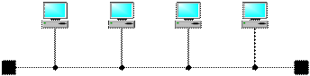
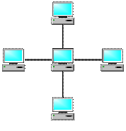
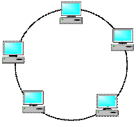

Топологии компьютерных сетей
Под топологией (компоновкой, конфигурацией, структурой) компьютерной сети обычно понимается физическое расположение компьютеров сети один относительно одного и способ соединения их линиями связи. Важно отметить, что понятие топологии относится, в первую очередь, к локальным сетям, в которых структуру связей можно легко проследить.
Топология определяет требования к оборудованию, тип используемого кабеля, возможные и наиболее удобные методы управления обменом, надежность работы, возможности расширения сети.
Существует три основные топология сети:
- Сетевая топология шина (bus), при которой все компьютеры параллельно подключаются к одной
линии связи и информация от каждого компьютера одновременно передается всем другим компьютерам
(рис. 1);

Достоинства Недостатки - Простота и гибкость соединений.
- Недорогой кабель и разъемы.
- Необходимо небольшое количество кабеля.
- Прокладка кабеля не вызывает особых сложностей.
- Разрыв кабеля, или другие неполадки в соединении может исключить нормальную работу всей сети.
- Ограниченная длина кабеля и количество рабочих станций.
- Трудно обнаружить дефекты соединений.
- Невысокая производительность.
- При большом объеме передаваемых данных главный кабель может не справляться с потоком информации, что приводит к задержкам.
- Cетевая топология звезда (star), при которой к одному центральному компьютеру
присоединяются другие периферийные компьютеры, причем каждый из них использует свою отдельную
линию связи (рис. 2);

Достоинства Недостатки - Подключение новых рабочих станций не вызывает особых затруднений.
- Возможность мониторинга сети и централизованного управления сетью
- При использовании централизованного управления сетью локализация дефектов соединений максимально упрощается.
- Хорошая расширяемость и модернизация.
- Отказ концентратора приводит к отключению от сети всех рабочих станций, подключенных к ней.
- Достаточно высокая стоимость реализации, т.к. требуется большое количество кабеля.
- Cетевая топология кольцо (ring), при которой каждый компьютер передает информацию всегда
только одному компьютеру, следующему в цепочке, а получает информацию только от предыдущего
компьютера в цепочке, и эта цепочка замкнута в «кольцо» (рис. 3).

Достоинства Недостатки - Простота установки;
- Практически полное отсутствие дополнительного оборудования;
- Возможность устойчивой работы без существенного падения скорости передачи данных при интенсивной загрузке сети, поскольку использование маркера исключает возможность возникновения коллизий.
- Выход из строя одной рабочей станции и другие неполадки отражаются на работоспособности всей сети;
- Сложность конфигурирования и настройки;
- Сложность поиска неисправностей;
- Необходимость иметь две сетевые платы на каждой рабочей станции;
- Добавление/удаление станции требует временной остановки работы сети.